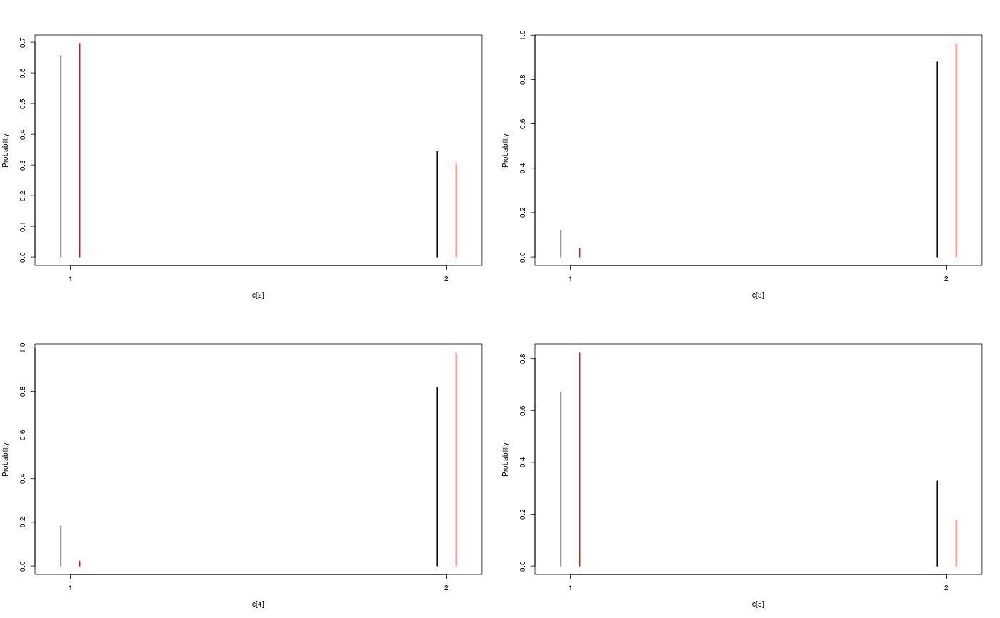

Objects for representing SMC output.
Source:R/smcarray-object.r
A smcarray object is used by the
biips_smc_samples function to represent SMC output or particles
of a given variable.
A smcarray.fsb object is a named list of smcarray objects with
different types of monitoring for the same variable. Members in this list
have names f (filtering), s (smoothing) or b (backward
smoothing).
A smcarray.fsb.list object is a named list of smcarray.fsb
objects for different monitored variables. It might also contain a member
named log_marg_like with an estimate of the log marginal likelihood.
The methods apply identically to smcarray, smcarray.fsb or
smcarray.fsb.list objects and return a named list with the same named
members as the input object.
is.smcarray(object) is.smcarray.fsb(object) is.smcarray.fsb.list(object) biips_diagnosis(object, ...) # S3 method for smcarray biips_diagnosis(object, ess_thres = 30, quiet = FALSE, ...) # S3 method for smcarray.fsb biips_diagnosis(object, type = "fsb", quiet = FALSE, ...) # S3 method for smcarray.fsb.list biips_diagnosis(object, type = "fsb", quiet = FALSE, ...) biips_summary(object, ...) # S3 method for smcarray biips_summary(object, probs = c(), order = ifelse(mode, 0, 1), mode = all(object$discrete), ...) # S3 method for smcarray.fsb biips_summary(object, ...) # S3 method for smcarray.fsb.list biips_summary(object, ...) biips_table(x, ...) # S3 method for smcarray biips_table(x, ...) biips_density(x, ...) # S3 method for smcarray biips_density(x, bw = "nrd0", ...) # S3 method for smcarray.fsb biips_table(x, ...) # S3 method for smcarray.fsb biips_density(x, bw = "nrd0", adjust = 1, ...) # S3 method for smcarray.fsb.list biips_table(x, ...) # S3 method for smcarray.fsb.list biips_density(x, bw = "nrd0", ...) # S3 method for smcarray summary(object, ...) # S3 method for smcarray.fsb summary(object, ...) # S3 method for smcarray.fsb.list summary(object, ...) # S3 method for smcarray density(x, ...) # S3 method for smcarray.fsb density(x, ...) # S3 method for smcarray.fsb.list density(x, ...)
Arguments
| object, x | a |
|---|---|
| ... | additional arguments to be passed to the default methods. See
|
| ess_thres | integer. Threshold on the Effective Sample Size (ESS). If
all the ESS components are over |
| quiet | logical. Disable message display. (default= |
| type | string containing the characters |
| probs | vector of reals. probability levels in ]0,1[ for quantiles.
(default = |
| order | integer. Moment statistics of order below or equal to
|
| mode | logical. Activate computation of the mode, i.e. the most
frequent value among the particles. (default = |
| bw | either a real with the smoothing bandwidth to be used or a string
giving a rule to choose the bandwidth. See |
| adjust | scale factor for the bandwidth. the bandwidth used is actually
|
Value
The methods apply identically to smcarray, smcarray.fsb or
smcarray.fsb.list objects and return a named list with the same
named members as the input object.
The function is.smcarray returns TRUE if the object is of class smcarray.
The function is.smcarray.fsb returns TRUE if the object
is of class smcarray.fsb.
The function is.smcarray.fsb.list returns TRUE if the
object is of class smcarray.fsb.list.
The method biips_diagnosis prints diagnosis of the SMC output
and returns the minimum ESS value.
The method biips_summary returns univariate marginal
statistics. The output innermost members are objects of class
summary.smcarray. Assuming dim is the dimension of the
variable, the summary.smcarray object is a list with the following
members:
array of size dim. The mean if order>=1.
array of size dim. The variance, if order>=2.
array of size dim. The skewness, if order>=3.
array of size dim. The kurtosis, if order>=4.
vector of quantile probabilities.
list of arrays of size dim for each probability level
in probs. The quantile values, if probs is not empty.
array of size dim. The most frequent values for
discrete components.
Details
Assuming dim is the dimension of the monitored variable, a
smcarray object is a list with the members:
- values
array of dimension
c(dim, n_part)with the values of the particles.- weights
array of dimension
c(dim, n_part)with the weights of the particles.- ess
array of dimension
dimwith Effective Sample Sizes of the particles set.- discrete
array of dimension
dimwith logicals indicating discreteness of each component.- iterations
array of dimension
dimwith sampling iterations of each component.- conditionals
lists of the contitioning variables (observations). Its value is:
for filtering: a list of dimension
dim. each member is a character vector with the respective conditioning variables of the node array component.for smoothing/backward_smoothing: a character vector, the same for all the components of the node array.
- name
string with the name of the variable.
- lower
vector with the lower bounds of the variable.
- upper
vector with the upper bounds of the variable.
- type
string with the type of monitor (
'filtering','smoothing'or'backward_smoothing').
For instance, if out_smc is a smcarray.fsb.list object, one can
access the values of the smoothing particles for the variable 'x'
with: out_smc$x$s$values.
See also
Examples
modelfile <- system.file('extdata', 'hmm.bug', package = 'rbiips') stopifnot(nchar(modelfile) > 0) cat(readLines(modelfile), sep = '\n')#> var c_true[tmax], x_true[tmax], c[tmax], x[tmax], y[tmax] #> #> data #> { #> x_true[1] ~ dnorm(0, 1/5) #> y[1] ~ dnorm(x_true[1], exp(logtau_true)) #> for (t in 2:tmax) #> { #> c_true[t] ~ dcat(p) #> x_true[t] ~ dnorm(0.5*x_true[t-1]+25*x_true[t-1]/(1+x_true[t-1]^2)+8*cos(1.2*(t-1)), ifelse(c_true[t]==1, 1/10, 1/100)) #> y[t] ~ dnorm(x_true[t]/4, exp(logtau_true)) #> } #> } #> #> model #> { #> logtau ~ dunif(-3, 3) #> x[1] ~ dnorm(0, 1/5) #> y[1] ~ dnorm(x[1], exp(logtau)) #> for (t in 2:tmax) #> { #> c[t] ~ dcat(p) #> x[t] ~ dnorm(0.5*x[t-1]+25*x[t-1]/(1+x[t-1]^2)+8*cos(1.2*(t-1)), ifelse(c[t]==1, 1/10, 1/100)) #> y[t] ~ dnorm(x[t]/4, exp(logtau)) #> } #> }data <- list(tmax = 10, p = c(.5, .5), logtau_true = log(1), logtau = log(1)) model <- biips_model(modelfile, data, sample_data = TRUE)#> * Parsing model in: /home/adrien/Dropbox/workspace/rbiips/inst/extdata/hmm.bug #> * Compiling data graph #> Declaring variables #> Resolving undeclared variables #> Allocating nodes #> Graph size: 169 #> Sampling data #> Reading data back into data table #> * Compiling model graph #> Declaring variables #> Resolving undeclared variables #> Allocating nodes #> Graph size: 180n_part <- 100 out_smc <- biips_smc_samples(model, c('x', 'c[2:10]'), n_part, type = 'fs', rs_thres = 0.5, rs_type = 'stratified')#> * Assigning node samplers #> * Running SMC forward sampler with 100 particles #> |--------------------------------------------------| 100% #> |**************************************************| 10 iterations in 0.00 s#' Manipulate `smcarray.fsb.list` object is.smcarray.fsb.list(out_smc)#> [1] TRUEnames(out_smc)#> [1] "c[2:10]" "x" "log_marg_like"out_smc#> c[2:10] filtering smcarray: #> $mode #> [1] 1 2 2 1 2 1 2 2 2 #> #> Marginalizing over: particle(100) #> #> c[2:10] smoothing smcarray: #> $mode #> [1] 1 2 2 1 2 2 2 2 2 #> #> Marginalizing over: particle(100) #> #> #> x filtering smcarray: #> $mean #> [1] -2.511252 -7.724433 -24.706784 -31.705386 -17.480945 4.353854 #> [7] 6.651134 -8.015994 -1.153407 -16.278649 #> #> Marginalizing over: particle(100) #> #> x smoothing smcarray: #> $mean #> [1] -2.373479 -7.585363 -25.631439 -32.935665 -17.075466 4.024447 #> [7] 5.548396 -7.289486 -2.802202 -16.278649 #> #> Marginalizing over: particle(100) #> #> #> Log-marginal likelihood: -38.80216biips_diagnosis(out_smc)#> * Diagnosis of variable: c[2:10] #> Filtering: GOOD #> Smoothing: POOR #> The minimum effective sample size is too low: 12.59991 #> Estimates may be poor for some variables. #> You should increase the number of particles #> .* Diagnosis of variable: x[1:10] #> Filtering: GOOD #> Smoothing: POOR #> The minimum effective sample size is too low: 12.59991 #> Estimates may be poor for some variables. #> You should increase the number of particles #> .biips_summary(out_smc)#> c[2:10] filtering smcarray: #> $mode #> [1] 1 2 2 1 2 1 2 2 2 #> #> Marginalizing over: particle(100) #> #> c[2:10] smoothing smcarray: #> $mode #> [1] 1 2 2 1 2 2 2 2 2 #> #> Marginalizing over: particle(100) #> #> #> x filtering smcarray: #> $mean #> [1] -2.511252 -7.724433 -24.706784 -31.705386 -17.480945 4.353854 #> [7] 6.651134 -8.015994 -1.153407 -16.278649 #> #> Marginalizing over: particle(100) #> #> x smoothing smcarray: #> $mean #> [1] -2.373479 -7.585363 -25.631439 -32.935665 -17.075466 4.024447 #> [7] 5.548396 -7.289486 -2.802202 -16.278649 #> #> Marginalizing over: particle(100) #> #>#' Manipulate `smcarray.fsb` object is.smcarray.fsb(out_smc$x)#> [1] TRUEnames(out_smc$x)#> [1] "f" "s"out_smc$x#> filtering smcarray: #> $mean #> [1] -2.511252 -7.724433 -24.706784 -31.705386 -17.480945 4.353854 #> [7] 6.651134 -8.015994 -1.153407 -16.278649 #> #> Marginalizing over: particle(100) #> #> smoothing smcarray: #> $mean #> [1] -2.373479 -7.585363 -25.631439 -32.935665 -17.075466 4.024447 #> [7] 5.548396 -7.289486 -2.802202 -16.278649 #> #> Marginalizing over: particle(100) #>biips_diagnosis(out_smc$x)#> * Diagnosis of variable: x[1:10] #> Filtering: GOOD #> Smoothing: POOR #> The minimum effective sample size is too low: 12.59991 #> Estimates may be poor for some variables. #> You should increase the number of particles #> .summ_smc_x <- biips_summary(out_smc$x, order = 2, probs = c(.025, .975)) summ_smc_x#> filtering smcarray: #> $mean #> [1] -2.511252 -7.724433 -24.706784 -31.705386 -17.480945 4.353854 #> [7] 6.651134 -8.015994 -1.153407 -16.278649 #> #> $var #> [1] 0.7626423 10.4465326 19.8756192 11.9907475 10.4664837 15.7309246 #> [7] 19.0697822 10.9846480 15.8809271 12.6805319 #> #> $probs #> [1] 0.025 0.975 #> #> $quant #> $quant$`0.025` #> [1] -4.082389 -15.018010 -32.776464 -38.004680 -24.175178 -1.536774 #> [7] -4.761837 -12.725714 -11.380153 -23.187816 #> #> $quant$`0.975` #> [1] -0.7822667 -3.3452161 -14.8996768 -23.9440440 -11.5875788 12.0310370 #> [7] 14.1227257 -1.0294242 4.4873749 -8.8020497 #> #> #> Marginalizing over: particle(100) #> #> smoothing smcarray: #> $mean #> [1] -2.373479 -7.585363 -25.631439 -32.935665 -17.075466 4.024447 #> [7] 5.548396 -7.289486 -2.802202 -16.278649 #> #> $var #> [1] 0.6444075 14.3199922 14.6778972 5.6757351 9.7754211 11.5837880 #> [7] 20.0829903 7.2940514 6.1104302 12.6805319 #> #> $probs #> [1] 0.025 0.975 #> #> $quant #> $quant$`0.025` #> [1] -4.045283 -14.777315 -31.924168 -37.602509 -22.773549 -2.222205 #> [7] -3.401456 -12.748046 -7.957866 -23.187816 #> #> $quant$`0.975` #> [1] -1.0292148 -2.4584248 -16.5758012 -28.8476022 -11.4408993 9.4616870 #> [7] 13.3746680 -2.5775357 0.8573436 -8.8020497 #> #> #> Marginalizing over: particle(100) #>dens_smc_x <- biips_density(out_smc$x, bw = 'nrd0', adjust = 1, n = 100) par(mfrow = c(2, 2)) plot(dens_smc_x)is.smcarray.fsb(out_smc[['c[2:10]']])#> [1] TRUEnames(out_smc[['c[2:10]']])#> [1] "f" "s"out_smc[['c[2:10]']]#> filtering smcarray: #> $mode #> [1] 1 2 2 1 2 1 2 2 2 #> #> Marginalizing over: particle(100) #> #> smoothing smcarray: #> $mode #> [1] 1 2 2 1 2 2 2 2 2 #> #> Marginalizing over: particle(100) #>biips_diagnosis(out_smc[['c[2:10]']])#> * Diagnosis of variable: c[2:10] #> Filtering: GOOD #> Smoothing: POOR #> The minimum effective sample size is too low: 12.59991 #> Estimates may be poor for some variables. #> You should increase the number of particles #> .summ_smc_c <- biips_summary(out_smc[['c[2:10]']]) summ_smc_c#> filtering smcarray: #> $mode #> [1] 1 2 2 1 2 1 2 2 2 #> #> Marginalizing over: particle(100) #> #> smoothing smcarray: #> $mode #> [1] 1 2 2 1 2 2 2 2 2 #> #> Marginalizing over: particle(100) #>table_smc_c <- biips_table(out_smc[['c[2:10]']]) par(mfrow = c(2, 2))plot(table_smc_c)#' Manipulate `smcarray` object is.smcarray(out_smc$x$f)#> [1] TRUEnames(out_smc$x$f)#> [1] "values" "weights" "ess" "discrete" "iterations" #> [6] "conditionals" "name" "lower" "upper" "type"out_smc$x$f#> smcarray: #> $mean #> [1] -2.511252 -7.724433 -24.706784 -31.705386 -17.480945 4.353854 #> [7] 6.651134 -8.015994 -1.153407 -16.278649 #> #> Marginalizing over: particle(100)out_smc$x$s#> smcarray: #> $mean #> [1] -2.373479 -7.585363 -25.631439 -32.935665 -17.075466 4.024447 #> [7] 5.548396 -7.289486 -2.802202 -16.278649 #> #> Marginalizing over: particle(100)biips_diagnosis(out_smc$x$f)#> * Diagnosis of variable: x[1:10] #> Filtering: GOODbiips_diagnosis(out_smc$x$s)#> * Diagnosis of variable: x[1:10] #> Smoothing: POOR #> The minimum effective sample size is too low: 12.59991 #> Estimates may be poor for some variables. #> You should increase the number of particles #> .biips_summary(out_smc$x$f)#> smcarray: #> $mean #> [1] -2.511252 -7.724433 -24.706784 -31.705386 -17.480945 4.353854 #> [7] 6.651134 -8.015994 -1.153407 -16.278649 #> #> Marginalizing over: particle(100)biips_summary(out_smc$x$s)#> smcarray: #> $mean #> [1] -2.373479 -7.585363 -25.631439 -32.935665 -17.075466 4.024447 #> [7] 5.548396 -7.289486 -2.802202 -16.278649 #> #> Marginalizing over: particle(100)par(mfrow = c(2, 2))plot(biips_density(out_smc$x$f))par(mfrow = c(2, 2))plot(biips_density(out_smc$x$s))par(mfrow = c(2, 2))plot(biips_table(out_smc[['c[2:10]']]$f))par(mfrow = c(2, 2))plot(biips_table(out_smc[['c[2:10]']]$s))